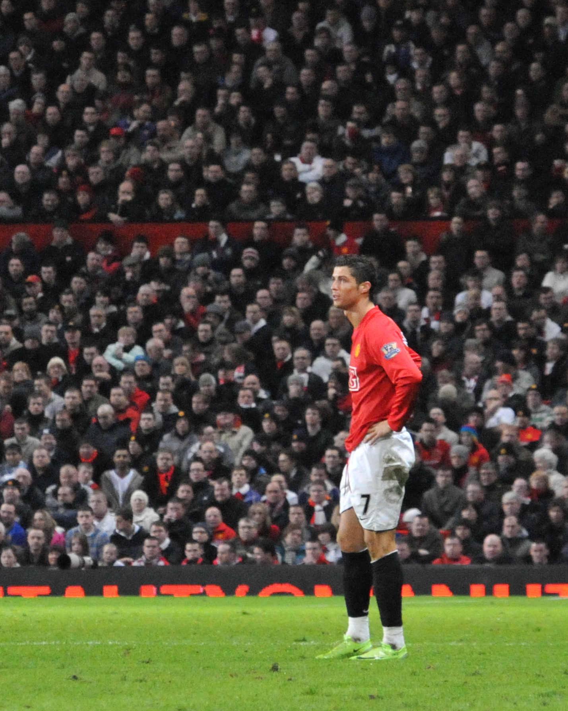
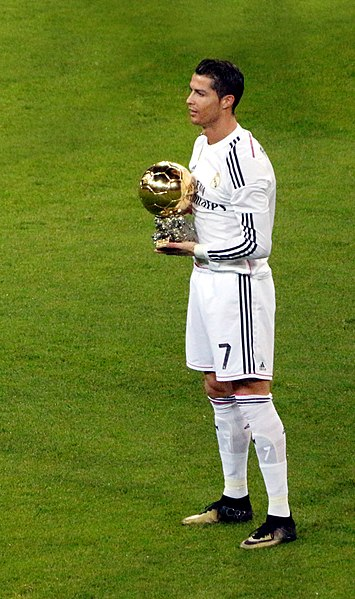

Cristiano Ronaldo es un futbolista portugués cuya mentalidad ganadora y trabajo duro lo han convertido en uno de los mejores jugadores de la historia. El delantero, que actualmente juega en el Al-Nassr de Arabia Saudita, pasó nueve temporadas en el Real Madrid, donde disfrutó de sus años más exitosos hasta la fecha y construyó un récord impresionante. Además de destacar en el equipo, Ronaldo también ha sido el mayor referente de su selección desde su debut en 2001, desde ese momento se convirtió en la principal figura de la Selección de Portugal. En 2004, Ronaldo jugó en los Juegos Olímpicos de Atenas, pero Portugal no pudo mostrar su mejor forma. Aún así, Ronaldo anotó en la segunda victoria de la fase de grupos sobre Marruecos. Fue la única victoria de la Selección Olímpica de Portugal que no logró pasar de la fase de grupos en ese Mundial.

Desde muy temprana edad, Cristiano poseía la resistencia, el valor y la ambición de un gran jugador. A los catorce años fichó por el Sporting Club de Portugal y viajó a Lisboa para hacerse famoso y desarrollarse como jugador. Ronaldo se ganó un lugar en el equipo juvenil del Sporting de Lisboa a la edad de 16 años, pero rápidamente fue más allá y fue ascendido directamente al primer equipo ese mismo año. La noticia de su talento llegó a Liverpool, Arsenal y Barcelona, quienes se interesaron por él. Sin embargo, el United terminó fichando a Ronaldo después de que el técnico Alex Ferguson quedara impresionado por sus actuaciones.

Ferguson consiguió que su club fichara a Cristiano en una operación que costó 18 millones de euros, convirtiéndose en el primer portugués en jugar en Inglaterra. A pesar de su juventud, Ronaldo no defraudó, estableciéndose como un futbolista de talla mundial durante sus seis temporadas con el Manchester United. Después de cuatro años de lucha, el equipo pudo proclamarse campeón de la Premier League gracias en parte al delantero, que fue el primer jugador en marcar más de 20 goles en su año de debut. En su última temporada con el equipo inglés en 2008, Ronaldo experimentó el pináculo de los logros deportivos. Ganaron la codiciada Liga de Campeones, así como la Premier League por tercera vez. Además, Ronaldo fue galardonado con el premio FIFA Puskas al mejor gol. Durante su etapa en el Manchester United, ganó un total de nueve trofeos. Cristiano Ronaldo obtuvo reconocimiento y numerosos premios por sus excepcionales habilidades en el fútbol. Recibió el premio al Mejor Jugador de la Premier League tanto en 2007 como en 2008, y también fue nombrado Deportista portugués del año. Durante la temporada 2007-08, fue galardonado con el Balón de Oro por la revista France Football, y también logró los prestigiosos premios Bota de Oro y FIFA World Player en 2008.
El Real Madrid prestó mucha atención a estas cifras, ya que estaban buscando activamente a un jugador estrella que pudiera marcar de forma constante. Así, Ronaldo se incorporó al equipo en el verano de 2009, justo antes del inicio de la temporada 2009-2010, en el que fue, en su momento, el traspaso más caro de la historia del fútbol, con un coste de 94 millones de euros. La llegada del futbolista portugués generó un gran revuelo, con la cantidad de 80.000 aficionados que se presentaron para ver su ceremonia de presentación en el Santiago Bernabéu. Al frente de la ofensiva blanca durante nueve temporadas, Cristiano Ronaldo formó un formidable trío con Karim Benzema y Gareth Bale, apodado cariñosamente "la BBC" por los medios. Durante su tiempo en el Real Madrid, Ronaldo alcanzó la grandeza, estableciendo un récord del club de 451 goles en 438 partidos oficiales. Su impresionante cuenta incluye 4 títulos de la Liga de Campeones, 3 Copas Mundiales de Clubes, 3 Supercopas de Europa, 2 títulos de Liga, 2 Copa del Rey y 2 Supercopas de España, lo que lo convierte en una de las leyendas del club Merengue. Además, no podemos pasar por alto los reconocimientos personales que ha obtenido, incluidos cuatro Balones de Oro, tres Botas de Oro, dos premios The Best, tres premios al Mejor Jugador de la UEFA y tres trofeos Pichichi.
En 2018 hubo numerosas especulaciones sobre la posible salida de Cristiano del Real Madrid. Sin embargo, en verano se confirmó que se traspasaría a la Juventus por la suma de 100 millones de euros, lo que la convierte en la compra más cara de la historia para un jugador mayor de 30 años. El propio Cristiano se despidió del Madrid escribiendo una carta en la que admitía que siempre apreciaría la inigualable experiencia de jugar allí al fútbol. En su llegada a la Juventus, Ronaldo fue recibido con gran expectación. No fue hasta su cuarto juego cuando finalmente anotó contra Sassuolo. Durante su temporada inaugural en Italia, logró mucho, ganando tanto la Supercopa como la Serie A. Desafortunadamente, su equipo fue eliminado de la UEFA Champions League. En su segunda temporada con la Juventus, el portugués volvió a ganar la Serie A, la segunda consecutiva para él y la novena con para el club italiano.